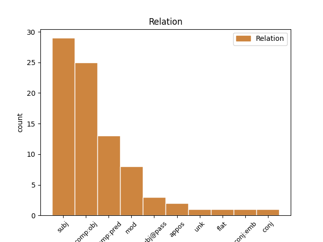
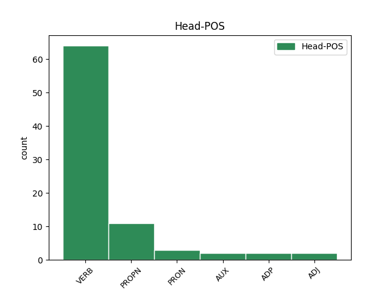
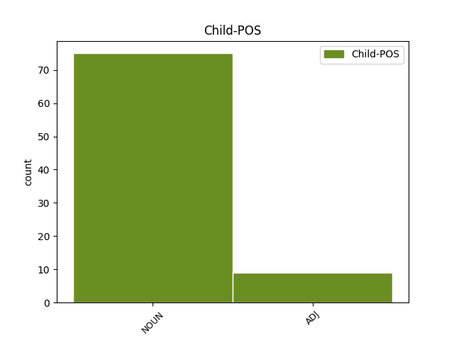

Distribution of features within this leaf



Agreement Rules sorted by frequency.
- When the dependent token is the subject(subj) of the head token, and the head token is VERB and the dependent token is NOUN.
1 Subalit _ _ _ _ 0 _ _ _
2 , _ _ _ _ 0 _ _ _
3 naitatag naitatag VERB _ Animacy=Anim|Aspect=Perf|Gender=Masc|Number=Plur|Polarity=Pos|Variant=Short|VerbForm=Part|Voice=Pass 0 _ _ _
4 ang _ _ _ _ 0 _ _ _
5 ganitong _ _ _ _ 0 _ _ _
6 pilosopiyang pilosopiyang NOUN _ Gender=Masc|Number=Sing 3 subj _ _
7 Budista _ _ _ _ 0 _ _ _
8 mula _ _ _ _ 0 _ _ _
9 sa _ _ _ _ 0 _ _ _
10 mga _ _ _ _ 0 _ _ _
11 doktrinang _ _ _ _ 0 _ _ _
12 : _ _ _ _ 0 _ _ _
13 * _ _ _ _ 0 _ _ _
14 Anatta _ _ _ _ 0 _ _ _
15 , _ _ _ _ 0 _ _ _
16 na _ _ _ _ 0 _ _ _
17 sadyang _ _ _ _ 0 _ _ _
18 nagsasaad _ _ _ _ 0 _ _ _
19 na _ _ _ _ 0 _ _ _
20 walang _ _ _ _ 0 _ _ _
21 substansiyal _ _ _ _ 0 _ _ _
22 na _ _ _ _ 0 _ _ _
23 pagkamayroong _ _ _ _ 0 _ _ _
24 metapisikal _ _ _ _ 0 _ _ _
25 . _ _ _ _ 0 _ _ _
1 Upang _ _ _ _ 0 _ _ _
2 mapanatili mapanatili VERB _ Animacy=Anim|Aspect=Perf|Gender=Masc|Number=Plur|Polarity=Pos|Tense=Past|VerbForm=Part 0 _ _ _
3 ang _ _ _ _ 0 _ _ _
4 kanilang _ _ _ _ 0 _ _ _
5 interes interes NOUN _ Gender=Masc|Number=Sing 2 comp:obj _ _
6 at _ _ _ _ 0 _ _ _
7 soberanya _ _ _ _ 0 _ _ _
8 sa _ _ _ _ 0 _ _ _
9 mga _ _ _ _ 0 _ _ _
10 lupang _ _ _ _ 0 _ _ _
11 ito _ _ _ _ 0 _ _ _
12 , _ _ _ _ 0 _ _ _
13 nagtalaga _ _ _ _ 0 _ _ _
14 ang _ _ _ _ 0 _ _ _
15 mga _ _ _ _ 0 _ _ _
16 Emperador _ _ _ _ 0 _ _ _
17 ng _ _ _ _ 0 _ _ _
18 mga _ _ _ _ 0 _ _ _
19 maharlika _ _ _ _ 0 _ _ _
20 at _ _ _ _ 0 _ _ _
21 maging _ _ _ _ 0 _ _ _
22 mga _ _ _ _ 0 _ _ _
23 obispo _ _ _ _ 0 _ _ _
24 upang _ _ _ _ 0 _ _ _
25 pamahalaan _ _ _ _ 0 _ _ _
26 ang _ _ _ _ 0 _ _ _
27 mga _ _ _ _ 0 _ _ _
28 ito _ _ _ _ 0 _ _ _
29 . _ _ _ _ 0 _ _ _
1 Siya _ _ _ _ 0 _ _ _
2 ang _ _ _ _ 0 _ _ _
3 palagiang _ _ _ _ 0 _ _ _
4 kapareha _ _ _ _ 0 _ _ _
5 ni _ _ _ _ 0 _ _ _
6 Lolita _ _ _ _ 0 _ _ _
7 Rodriguez _ _ _ _ 0 _ _ _
8 sa _ _ _ _ 0 _ _ _
9 mga _ _ _ _ 0 _ _ _
10 pelikula _ _ _ _ 0 _ _ _
11 at _ _ _ _ 0 _ _ _
12 naging nagi VERB _ Aspect=Perf|Definite=Ind|Gender=Fem|Number=Sing|Tense=Past|VerbForm=Part|Voice=Act 0 _ _ _
13 asawa asawa NOUN _ Definite=Ind|Gender=Fem|Number=Sing 12 comp:pred _ _
14 nito _ _ _ _ 0 _ _ _
15 . _ _ _ _ 0 _ _ _
1 Lumalabas _ _ _ _ 0 _ _ _
2 na na ADP _ Case=Gen|Definite=Def|Gender=Fem|Number=Sing|PronType=Art 0 _ _ _
3 tila tila NOUN _ Case=Gen|Gender=Fem|Number=Sing 2 comp:obj _ _
4 nasang _ _ _ _ 0 _ _ _
5 ang _ _ _ _ 0 _ _ _
6 buong _ _ _ _ 0 _ _ _
7 umaga _ _ _ _ 0 _ _ _
8 ni _ _ _ _ 0 _ _ _
9 Padre _ _ _ _ 0 _ _ _
10 Damaso _ _ _ _ 0 _ _ _
11 sa _ _ _ _ 0 _ _ _
12 pagsesermon _ _ _ _ 0 _ _ _
13 . _ _ _ _ 0 _ _ _
1 Magkasamang _ _ _ _ 0 _ _ _
2 ipinalabas _ _ _ _ 0 _ _ _
3 nina _ _ _ _ 0 _ _ _
4 Tassilo _ _ _ _ 0 _ _ _
5 von _ _ _ _ 0 _ _ _
6 Heydebrand _ _ _ _ 0 _ _ _
7 und _ _ _ _ 0 _ _ _
8 der _ _ _ _ 0 _ _ _
9 Lasa _ _ _ _ 0 _ _ _
10 at _ _ _ _ 0 _ _ _
11 Paul _ _ _ _ 0 _ _ _
12 Rudolf _ _ _ _ 0 _ _ _
13 von _ _ _ _ 0 _ _ _
14 Bilguer _ _ _ _ 0 _ _ _
15 ang _ _ _ _ 0 _ _ _
16 Handbuch Handbuch PROPN _ Case=Dat|Gender=Neut|Number=Sing 0 _ _ _
17 des _ _ _ _ 0 _ _ _
18 Schachspiels _ _ _ _ 0 _ _ _
19 ( _ _ _ _ 0 _ _ _
20 Libreto Libreto NOUN _ Case=Nom|Gender=Neut|Number=Sing 16 appos _ _
21 ng _ _ _ _ 0 _ _ _
22 Ahedres _ _ _ _ 0 _ _ _
23 ) _ _ _ _ 0 _ _ _
24 , _ _ _ _ 0 _ _ _
25 ang _ _ _ _ 0 _ _ _
26 kauna _ _ _ _ 0 _ _ _
27 - _ _ _ _ 0 _ _ _
28 unahang _ _ _ _ 0 _ _ _
29 detalyadong _ _ _ _ 0 _ _ _
30 manwal _ _ _ _ 0 _ _ _
31 ng _ _ _ _ 0 _ _ _
32 pag _ _ _ _ 0 _ _ _
33 - _ _ _ _ 0 _ _ _
34 aaral _ _ _ _ 0 _ _ _
35 ng _ _ _ _ 0 _ _ _
36 ahedres _ _ _ _ 0 _ _ _
37 . _ _ _ _ 0 _ _ _
1 Lubos lubos ADJ _ Case=Nom|Definite=Ind|Degree=Pos|Gender=Masc|Number=Sing 5 mod _ _
2 na _ _ _ _ 0 _ _ _
3 nasaktan _ _ _ _ 0 _ _ _
4 si _ _ _ _ 0 _ _ _
5 Naruto naruto PROPN _ Case=Nom|Gender=Masc|Number=Sing 0 _ _ _
6 sa _ _ _ _ 0 _ _ _
7 nakitang _ _ _ _ 0 _ _ _
8 sugatan _ _ _ _ 0 _ _ _
9 na _ _ _ _ 0 _ _ _
10 guro _ _ _ _ 0 _ _ _
11 . _ _ _ _ 0 _ _ _
1 Sa _ _ _ _ 0 _ _ _
2 tatlong _ _ _ _ 0 _ _ _
3 sinoptiko _ _ _ _ 0 _ _ _
4 , _ _ _ _ 0 _ _ _
5 kanilang _ _ _ _ 0 _ _ _
6 kinuha _ _ _ _ 0 _ _ _
7 ang _ _ _ _ 0 _ _ _
8 isang _ _ _ _ 0 _ _ _
9 nagngangalang _ _ _ _ 0 _ _ _
10 Simon _ _ _ _ 0 _ _ _
11 na _ _ _ _ 0 _ _ _
12 taga _ _ _ _ 0 _ _ _
13 - _ _ _ _ 0 _ _ _
14 Cerene _ _ _ _ 0 _ _ _
15 at _ _ _ _ 0 _ _ _
16 ipinapasan ipinapasan VERB _ Aspect=Perf|Definite=Ind|Gender=Masc|Number=Sing|VerbForm=Part|Voice=Pass 0 _ _ _
17 sa _ _ _ _ 0 _ _ _
18 kaniya _ _ _ _ 0 _ _ _
19 ang _ _ _ _ 0 _ _ _
20 krus krus NOUN _ Definite=Ind|Gender=Masc|Number=Sing 16 subj@pass _ _
21 ni _ _ _ _ 0 _ _ _
22 Hesus _ _ _ _ 0 _ _ _
23 . _ _ _ _ 0 _ _ _
1 Pinalitan _ _ _ _ 0 _ _ _
2 nina _ _ _ _ 0 _ _ _
3 Juno _ _ _ _ 0 _ _ _
4 at _ _ _ _ 0 _ _ _
5 Minerva _ _ _ _ 0 _ _ _
6 ang ang AUX _ Definite=Def|Gender=Masc|Number=Sing|PronType=Art 0 _ _ _
7 kanyang _ _ _ _ 0 _ _ _
8 lugar lugar NOUN _ Gender=Masc|Number=Sing 6 comp:pred _ _
9 at _ _ _ _ 0 _ _ _
10 ni _ _ _ _ 0 _ _ _
11 Mars _ _ _ _ 0 _ _ _
12 dito _ _ _ _ 0 _ _ _
13 . _ _ _ _ 0 _ _ _
1 Sa _ _ _ _ 0 _ _ _
2 panteismo _ _ _ _ 0 _ _ _
3 , _ _ _ _ 0 _ _ _
4 ang _ _ _ _ 0 _ _ _
5 diyos _ _ _ _ 0 _ _ _
6 ang _ _ _ _ 0 _ _ _
7 mismong mismong ADJ _ Gender=Masc|Number=Sing 8 mod _ _
8 uniberso uniberso ADJ _ Gender=Masc|Number=Sing 0 _ _ _
9 . _ _ _ _ 0 _ _ _
1 S. _ _ _ _ 0 _ _ _
2 " _ _ _ _ 0 _ _ _
3 dahil _ _ _ _ 0 _ _ _
4 hindi _ _ _ _ 0 _ _ _
5 niya niya PRON _ Case=Dat|Gender=Masc|Number=Sing|Person=3|PronType=Prs 0 _ _ _
6 maisulat maisulat NOUN _ Definite=Ind|Gender=Masc|Number=Sing 5 comp:obj _ _
7 ang _ _ _ _ 0 _ _ _
8 pangalan _ _ _ _ 0 _ _ _
9 ni _ _ _ _ 0 _ _ _
10 Ned _ _ _ _ 0 _ _ _
11 sa _ _ _ _ 0 _ _ _
12 pisara _ _ _ _ 0 _ _ _
13 . _ _ _ _ 0 _ _ _
Disagree Examples:
1 Ang _ _ _ _ 0 _ _ _
2 kanyang _ _ _ _ 0 _ _ _
3 pagpili _ _ _ _ 0 _ _ _
4 sa _ _ _ _ 0 _ _ _
5 wikang _ _ _ _ 0 _ _ _
6 Ingles _ _ _ _ 0 _ _ _
7 bilang _ _ _ _ 0 _ _ _
8 wika _ _ _ _ 0 _ _ _
9 ng _ _ _ _ 0 _ _ _
10 pamamahayag _ _ _ _ 0 _ _ _
11 ay _ _ _ _ 0 _ _ _
12 naging nagi VERB _ Animacy=Inan|Case=Loc|Degree=Pos|Gender=Masc|Number=Sing 0 _ _ _
13 isang _ _ _ _ 0 _ _ _
14 malaking _ _ _ _ 0 _ _ _
15 instrumento instrumento NOUN _ Definite=Ind|Gender=Neut|Number=Sing 12 comp:obj _ _
16 sa _ _ _ _ 0 _ _ _
17 pagpapalawak _ _ _ _ 0 _ _ _
18 ng _ _ _ _ 0 _ _ _
19 kanyang _ _ _ _ 0 _ _ _
20 mga _ _ _ _ 0 _ _ _
21 tagapakinig _ _ _ _ 0 _ _ _
22 hindi _ _ _ _ 0 _ _ _
23 lamang _ _ _ _ 0 _ _ _
24 sa _ _ _ _ 0 _ _ _
25 kanyang _ _ _ _ 0 _ _ _
26 bansa _ _ _ _ 0 _ _ _
27 kundi _ _ _ _ 0 _ _ _
28 sa _ _ _ _ 0 _ _ _
29 buong _ _ _ _ 0 _ _ _
30 mundo _ _ _ _ 0 _ _ _
31 . _ _ _ _ 0 _ _ _
1 Ang _ _ _ _ 0 _ _ _
2 mga _ _ _ _ 0 _ _ _
3 teroristang _ _ _ _ 0 _ _ _
4 Muslim _ _ _ _ 0 _ _ _
5 na _ _ _ _ 0 _ _ _
6 Pakistani _ _ _ _ 0 _ _ _
7 ay _ _ _ _ 0 _ _ _
8 nagtanim nagtanim VERB _ Gender=Masc|HebBinyan=HIFIL|Number=Sing|Person=3|Tense=Fut|Voice=Act 0 _ _ _
9 mga _ _ _ _ 0 _ _ _
10 bomba bomba NOUN _ Gender=Fem|Number=Sing 8 comp:obj _ _
11 sa _ _ _ _ 0 _ _ _
12 iba`t _ _ _ _ 0 _ _ _
13 ibang _ _ _ _ 0 _ _ _
14 lugar _ _ _ _ 0 _ _ _
15 sa _ _ _ _ 0 _ _ _
16 INdia _ _ _ _ 0 _ _ _
17 . _ _ _ _ 0 _ _ _
18 30 _ _ _ _ 0 _ _ _
19 tao _ _ _ _ 0 _ _ _
20 ang _ _ _ _ 0 _ _ _
21 namatay _ _ _ _ 0 _ _ _
22 at _ _ _ _ 0 _ _ _
23 130 _ _ _ _ 0 _ _ _
24 ang _ _ _ _ 0 _ _ _
25 sugatan _ _ _ _ 0 _ _ _
26 . _ _ _ _ 0 _ _ _
1 Ang _ _ _ _ 0 _ _ _
2 pasimula _ _ _ _ 0 _ _ _
3 sa _ _ _ _ 0 _ _ _
4 planong _ _ _ _ 0 _ _ _
5 pagsakop _ _ _ _ 0 _ _ _
6 ni _ _ _ _ 0 _ _ _
7 Hitler _ _ _ _ 0 _ _ _
8 sa _ _ _ _ 0 _ _ _
9 Britanya _ _ _ _ 0 _ _ _
10 ang _ _ _ _ 0 _ _ _
11 malawakang _ _ _ _ 0 _ _ _
12 pag _ _ _ _ 0 _ _ _
13 - _ _ _ _ 0 _ _ _
14 atake _ _ _ _ 0 _ _ _
15 sa _ _ _ _ 0 _ _ _
16 himpapawid _ _ _ _ 0 _ _ _
17 sa _ _ _ _ 0 _ _ _
18 Labanan _ _ _ _ 0 _ _ _
19 sa _ _ _ _ 0 _ _ _
20 Britanya _ _ _ _ 0 _ _ _
21 sa _ _ _ _ 0 _ _ _
22 base _ _ _ _ 0 _ _ _
23 ng _ _ _ _ 0 _ _ _
24 Royal _ _ _ _ 0 _ _ _
25 Air _ _ _ _ 0 _ _ _
26 Force _ _ _ _ 0 _ _ _
27 at _ _ _ _ 0 _ _ _
28 mga _ _ _ _ 0 _ _ _
29 estasyong _ _ _ _ 0 _ _ _
30 radar _ _ _ _ 0 _ _ _
31 sa _ _ _ _ 0 _ _ _
32 Timog timog ADJ _ Definite=Ind|Degree=Pos|Gender=Neut|Number=Sing 35 mod _ _
33 - _ _ _ _ 0 _ _ _
34 Silangang _ _ _ _ 0 _ _ _
35 Inglatera inglatera PROPN _ Definite=Ind|Gender=Fem|Number=Sing 0 _ _ _
36 . _ _ _ _ 0 _ _ _
1 Ang _ _ _ _ 0 _ _ _
2 pasimula _ _ _ _ 0 _ _ _
3 sa _ _ _ _ 0 _ _ _
4 planong _ _ _ _ 0 _ _ _
5 pagsakop _ _ _ _ 0 _ _ _
6 ni _ _ _ _ 0 _ _ _
7 Hitler _ _ _ _ 0 _ _ _
8 sa _ _ _ _ 0 _ _ _
9 Britanya _ _ _ _ 0 _ _ _
10 ang _ _ _ _ 0 _ _ _
11 malawakang _ _ _ _ 0 _ _ _
12 pag _ _ _ _ 0 _ _ _
13 - _ _ _ _ 0 _ _ _
14 atake _ _ _ _ 0 _ _ _
15 sa _ _ _ _ 0 _ _ _
16 himpapawid _ _ _ _ 0 _ _ _
17 sa _ _ _ _ 0 _ _ _
18 Labanan _ _ _ _ 0 _ _ _
19 sa _ _ _ _ 0 _ _ _
20 Britanya _ _ _ _ 0 _ _ _
21 sa _ _ _ _ 0 _ _ _
22 base _ _ _ _ 0 _ _ _
23 ng _ _ _ _ 0 _ _ _
24 Royal _ _ _ _ 0 _ _ _
25 Air _ _ _ _ 0 _ _ _
26 Force _ _ _ _ 0 _ _ _
27 at _ _ _ _ 0 _ _ _
28 mga _ _ _ _ 0 _ _ _
29 estasyong _ _ _ _ 0 _ _ _
30 radar _ _ _ _ 0 _ _ _
31 sa _ _ _ _ 0 _ _ _
32 Timog _ _ _ _ 0 _ _ _
33 - _ _ _ _ 0 _ _ _
34 Silangang silangan ADJ _ Definite=Ind|Degree=Pos|Gender=Neut|Number=Sing 35 mod _ _
35 Inglatera inglatera PROPN _ Definite=Ind|Gender=Fem|Number=Sing 0 _ _ _
36 . _ _ _ _ 0 _ _ _
1 Ayon _ _ _ _ 0 _ _ _
2 sa _ _ _ _ 0 _ _ _
3 isang _ _ _ _ 0 _ _ _
4 salaysay _ _ _ _ 0 _ _ _
5 , _ _ _ _ 0 _ _ _
6 si _ _ _ _ 0 _ _ _
7 Pythagoras _ _ _ _ 0 _ _ _
8 sa _ _ _ _ 0 _ _ _
9 kanyang _ _ _ _ 0 _ _ _
10 mga _ _ _ _ 0 _ _ _
11 paglalakbay _ _ _ _ 0 _ _ _
12 ay _ _ _ _ 0 _ _ _
13 natagpuan natagpuan VERB _ Animacy=Inan|Case=Nom|Gender=Masc|NameType=Pro|Number=Sing|Polarity=Pos 0 _ _ _
14 ang _ _ _ _ 0 _ _ _
15 ilang _ _ _ _ 0 _ _ _
16 mga _ _ _ _ 0 _ _ _
17 mangingisda mangingisda NOUN _ Definite=Ind|Gender=Neut|Number=Plur 13 comp:obj _ _
18 na _ _ _ _ 0 _ _ _
19 hinuhugot _ _ _ _ 0 _ _ _
20 ang _ _ _ _ 0 _ _ _
21 kanilang _ _ _ _ 0 _ _ _
22 mga _ _ _ _ 0 _ _ _
23 lambat _ _ _ _ 0 _ _ _
24 na _ _ _ _ 0 _ _ _
25 puno _ _ _ _ 0 _ _ _
26 ng _ _ _ _ 0 _ _ _
27 mga _ _ _ _ 0 _ _ _
28 isda _ _ _ _ 0 _ _ _
29 . _ _ _ _ 0 _ _ _